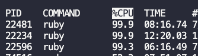

<!DOCTYPE html>
<html>
<head>

    <!-- Document Settings -->
    <meta charset="utf-8" />
    <meta http-equiv="X-UA-Compatible" content="IE=edge" />

    <!-- Base Meta -->
    <!-- dynamically fixing the title for tag/author pages -->


    <title>BigSur 上開發 Rails， Rails 把 CPU 吃好吃滿？！</title>
    <meta name="HandheldFriendly" content="True" />
    <meta name="viewport" content="width=device-width, initial-scale=1.0" />
    <!-- Styles'n'Scripts -->
    <link rel="stylesheet" type="text/css" href="/blog/assets/built/screen.css" />
    <link rel="stylesheet" type="text/css" href="/blog/assets/built/screen.edited.css" />
    <link rel="stylesheet" type="text/css" href="/blog/assets/built/syntax.css" />
    <!-- highlight.js -->
    <link rel="stylesheet" href="//cdnjs.cloudflare.com/ajax/libs/highlight.js/9.12.0/styles/default.min.css">
    <style>.hljs { background: none; }</style>

    <!--[if IE]>
        <style>
            p, ol, ul{
                width: 100%;
            }
            blockquote{
                width: 100%;
            }
        </style>
    <![endif]-->

    <!-- This tag outputs SEO meta+structured data and other important settings -->
    <meta name="description" content="keep calm and eat eight Plates." />
    <link rel="shortcut icon" href="/blog/assets/images/favicon.png" type="image/png" />
    <link rel="canonical" href="/blog/gem-listen-high-cpu-usage" />
    <meta name="referrer" content="no-referrer-when-downgrade" />

     <!--title below is coming from _includes/dynamic_title-->
    <meta property="og:site_name" content="Fumitsuki's magic box" />
    <meta property="og:type" content="website" />
    <meta property="og:title" content="BigSur 上開發 Rails， Rails 把 CPU 吃好吃滿？！" />
    <meta property="og:description" content="不知道大家換到 BigSur 有沒有遇到比較舊的 Rails 專案會讓 mac 發燙起飛的狀況。 看一下 top 發生了什麼事，發現沒有在幹嘛的 Rails app 竟然把 CPU 吃好吃滿（咦 原本我以為是 M1 有什麼特別的 issue，查了一下發現原來不少換到 BigSur 的人都有這個困擾 會發生這個狀況是因為開發時會監控 file change 的 gem listen 沒有套用到 Darwin 的 adapter，fall back to polling 形成高 CPU usage 的現象。  https://github.com/guard/listen/issues/478 至於為什麼沒有套用到 Darwin-adapter 呢？因為之前的 regex 不包含 darwin20 XD 會需要把 listen 升級至" />
    <meta property="og:url" content="/blog/gem-listen-high-cpu-usage" />
    <meta property="og:image" content="/blog/assets/images/fan.jpg" />
    <meta property="article:publisher" content="https://www.facebook.com/" />
    <meta property="article:author" content="https://www.facebook.com/" />
    <meta property="article:published_time" content="2021-09-01T17:00:00+08:00" />
    <meta property="article:modified_time" content="2021-09-01T17:00:00+08:00" />
    <meta property="article:tag" content="Rails" />
    <meta name="twitter:card" content="summary_large_image" />
    <meta name="twitter:title" content="BigSur 上開發 Rails， Rails 把 CPU 吃好吃滿？！" />
    <meta name="twitter:description" content="不知道大家換到 BigSur 有沒有遇到比較舊的 Rails 專案會讓 mac 發燙起飛的狀況。 看一下 top 發生了什麼事，發現沒有在幹嘛的 Rails app 竟然把 CPU 吃好吃滿（咦 原本我以為是 M1 有什麼特別的 issue，查了一下發現原來不少換到 BigSur 的人都有這個困擾 會發生這個狀況是因為開發時會監控 file change 的 gem listen 沒有套用到 Darwin 的 adapter，fall back to polling 形成高 CPU usage 的現象。  https://github.com/guard/listen/issues/478 至於為什麼沒有套用到 Darwin-adapter 呢？因為之前的 regex 不包含 darwin20 XD 會需要把 listen 升級至" />
    <meta name="twitter:url" content="/blog/" />
    <meta name="twitter:image" content="/blog/assets/images/fan.jpg" />
    <meta name="twitter:label1" content="Written by" />
    <meta name="twitter:data1" content="Fumitsuki's magic box" />
    <meta name="twitter:label2" content="Filed under" />
    <meta name="twitter:data2" content="Rails" />
    <meta name="twitter:site" content="@Fumitsuki0802" />
    <meta name="twitter:creator" content="@Fumitsuki0802" />
    <meta property="og:image:width" content="1400" />
    <meta property="og:image:height" content="933" />

    <script type="application/ld+json">
{
    "@context": "https://schema.org",
    "@type": "Website",
    "publisher": {
        "@type": "Organization",
        "name": "Fumitsuki's magic box",
        "logo": "/blog/assets/images/blog-icon.png"
    },
    "url": "/blog/gem-listen-high-cpu-usage",
    "image": {
        "@type": "ImageObject",
        "url": "/blog/assets/images/fan.jpg",
        "width": 2000,
        "height": 666
    },
    "mainEntityOfPage": {
        "@type": "WebPage",
        "@id": "/blog/gem-listen-high-cpu-usage"
    },
    "description": "不知道大家換到 BigSur 有沒有遇到比較舊的 Rails 專案會讓 mac 發燙起飛的狀況。 看一下 top 發生了什麼事，發現沒有在幹嘛的 Rails app 竟然把 CPU 吃好吃滿（咦 原本我以為是 M1 有什麼特別的 issue，查了一下發現原來不少換到 BigSur 的人都有這個困擾 會發生這個狀況是因為開發時會監控 file change 的 gem listen 沒有套用到 Darwin 的 adapter，fall back to polling 形成高 CPU usage 的現象。  https://github.com/guard/listen/issues/478 至於為什麼沒有套用到 Darwin-adapter 呢？因為之前的 regex 不包含 darwin20 XD 會需要把 listen 升級至"
}
    </script>

    <!-- <script type="text/javascript" src="https://demo.ghost.io/public/ghost-sdk.min.js?v=724281a32e"></script>
    <script type="text/javascript">
    ghost.init({
    	clientId: "ghost-frontend",
    	clientSecret: "f84a07a72b17"
    });
    </script> -->

    <meta name="generator" content="Jekyll 3.6.2" />
    <link rel="alternate" type="application/rss+xml" title="BigSur 上開發 Rails， Rails 把 CPU 吃好吃滿？！" href="/blog/feed.xml" />


</head>
<body class="post-template">

    <div class="site-wrapper">
        <!-- All the main content gets inserted here, index.hbs, post.hbs, etc -->
        <!-- default -->

<!-- The tag above means: insert everything in this file
into the {body} of the default.hbs template -->

<header class="site-header outer">
    <div class="inner">
        <nav class="site-nav">
    <div class="site-nav-left">
        
            
                <a class="site-nav-logo" href="/blog/"></a>
            
        
        
    </div>
    <div class="site-nav-right">
        <div class="social-links">
            
            
                <a class="social-link social-link-tw" href="https://twitter.com/Fumitsuki0802" target="_blank" rel="noopener"><svg xmlns="http://www.w3.org/2000/svg" viewBox="0 0 32 32"><path d="M30.063 7.313c-.813 1.125-1.75 2.125-2.875 2.938v.75c0 1.563-.188 3.125-.688 4.625a15.088 15.088 0 0 1-2.063 4.438c-.875 1.438-2 2.688-3.25 3.813a15.015 15.015 0 0 1-4.625 2.563c-1.813.688-3.75 1-5.75 1-3.25 0-6.188-.875-8.875-2.625.438.063.875.125 1.375.125 2.688 0 5.063-.875 7.188-2.5-1.25 0-2.375-.375-3.375-1.125s-1.688-1.688-2.063-2.875c.438.063.813.125 1.125.125.5 0 1-.063 1.5-.25-1.313-.25-2.438-.938-3.313-1.938a5.673 5.673 0 0 1-1.313-3.688v-.063c.813.438 1.688.688 2.625.688a5.228 5.228 0 0 1-1.875-2c-.5-.875-.688-1.813-.688-2.75 0-1.063.25-2.063.75-2.938 1.438 1.75 3.188 3.188 5.25 4.25s4.313 1.688 6.688 1.813a5.579 5.579 0 0 1 1.5-5.438c1.125-1.125 2.5-1.688 4.125-1.688s3.063.625 4.188 1.813a11.48 11.48 0 0 0 3.688-1.375c-.438 1.375-1.313 2.438-2.563 3.188 1.125-.125 2.188-.438 3.313-.875z"/></svg>
</a>
            
        </div>
        
    </div>
</nav>

    </div>
</header>

<!-- Everything inside the #post tags pulls data from the post -->
<!-- #post -->

<main id="site-main" class="site-main outer" role="main">
    <div class="inner">

        <article class="post-full  tag-rails post ">

            <header class="post-full-header">
                <section class="post-full-meta">
                    <time class="post-full-meta-date" datetime=" 1 September 2021"> 1 September 2021</time>
                    
                        <span class="date-divider">/</span>
                        
                            
                               <a href='/blog/tag/rails/'>RAILS</a>
                            
                        
                    
                </section>
                <h1 class="post-full-title">BigSur 上開發 Rails， Rails 把 CPU 吃好吃滿？！</h1>
            </header>

            
            <figure class="post-full-image" style="background-image: url(/blog/assets/images/fan.jpg)">
            </figure>
            

            <section class="post-full-content">
                <div class="kg-card-markdown">
                    <p>不知道大家換到 BigSur 有沒有遇到比較舊的 Rails 專案會讓 mac 發燙起飛的狀況。
看一下 top 發生了什麼事，發現沒有在幹嘛的 Rails app 竟然把 CPU 吃好吃滿（咦</p>

<p></p>

<p>原本我以為是 M1 有什麼特別的 issue，查了一下發現原來不少換到 BigSur 的人都有這個困擾</p>

<p>會發生這個狀況是因為開發時會監控 file change 的 gem <code class="language-plaintext highlighter-rouge">listen</code> 沒有套用到 Darwin 的 adapter，fall back to polling 形成高 CPU usage 的現象。
 
<a href="https://github.com/guard/listen/issues/478">https://github.com/guard/listen/issues/478</a></p>

<p>至於為什麼沒有套用到 Darwin-adapter 呢？因為之前的 regex 不包含 darwin20 XD</p>

<p>會需要把 listen 升級至 3.3.0 以上，才不會有筆電起飛的困擾</p>

<div class="language-ruby highlighter-rouge"><div class="highlight"><pre class="highlight"><code><span class="c1"># Gemfile</span>
<span class="n">gem</span> <span class="s1">'listen'</span><span class="p">,</span> <span class="s1">'~&gt; 3.3'</span>
</code></pre></div></div>


                </div>
            </section>

            <!-- Email subscribe form at the bottom of the page -->
            

            <footer class="post-full-footer">
                <!-- Everything inside the #author tags pulls data from the author -->
                <!-- #author-->
                
                    
                        <section class="author-card">
                            
                                
                            
                            <section class="author-card-content">
                                <h4 class="author-card-name"><a href="/blog/author/fumitsuki">文月</a></h4>
                                
                                    <p>擅長耍雷的フレンズ，在茫茫海海探索人生中</p>
                                
                            </section>
                        </section>
                        <div class="post-full-footer-right">
                            <a class="author-card-button" href="/blog/author/fumitsuki">Read More</a>
                        </div>
                    
                
                <!-- /author  -->
            </footer>

            <!-- If you use Disqus comments, just uncomment this block.
            The only thing you need to change is "test-apkdzgmqhj" - which
            should be replaced with your own Disqus site-id. -->
            

        </article>

    </div>
</main>

<!-- Links to Previous/Next posts -->
<aside class="read-next outer">
    <div class="inner">
        <div class="read-next-feed">
            
                
                
                
                
            

            <!-- If there's a next post, display it using the same markup included from - partials/post-card.hbs -->
            
                

    <article class="post-card post-template">
        
            <a class="post-card-image-link" href="/blog/ruby-permutations">
                <div class="post-card-image" style="background-image: url(/blog/assets/images/permutations.jpg)"></div>
            </a>
        
        <div class="post-card-content">
            <a class="post-card-content-link" href="/blog/ruby-permutations">
                <header class="post-card-header">
                    
                        
                            
                                <span class="post-card-tags">Ruby</span>
                            
                        
                    

                    <h2 class="post-card-title">ruby 的 permutation</h2>
                </header>
            </a>
            <footer class="post-card-meta">
                
                    
                        
                        
                        
                        <span class="post-card-author">
                            <a href="/blog/author/fumitsuki/">文月</a>
                        </span>
                    
                
                <span class="reading-time">
                    
                    
                      1 min read
                    
                </span>
            </footer>
        </div>
    </article>

            

            <!-- If there's a previous post, display it using the same markup included from - partials/post-card.hbs -->
            
                

    <article class="post-card post-template">
        
            <a class="post-card-image-link" href="/blog/cs50-notes-memory">
                <div class="post-card-image" style="background-image: url(/blog/assets/images/cs50.jpg)"></div>
            </a>
        
        <div class="post-card-content">
            <a class="post-card-content-link" href="/blog/cs50-notes-memory">
                <header class="post-card-header">
                    
                        
                            
                                <span class="post-card-tags">Cs50</span>
                            
                        
                    

                    <h2 class="post-card-title">CS50 筆記：第四講 Memory</h2>
                </header>
            </a>
            <footer class="post-card-meta">
                
                    
                        
                        
                        
                        <span class="post-card-author">
                            <a href="/blog/author/fumitsuki/">文月</a>
                        </span>
                    
                
                <span class="reading-time">
                    
                    
                      2 min read
                    
                </span>
            </footer>
        </div>
    </article>

            

        </div>
    </div>
</aside>

<!-- Floating header which appears on-scroll, included from includes/floating-header.hbs -->
<div class="floating-header">
    <div class="floating-header-logo">
        <a href="/blog/">
            
                
            
            <span>Fumitsuki's magic box</span>
        </a>
    </div>
    <span class="floating-header-divider">&mdash;</span>
    <div class="floating-header-title">BigSur 上開發 Rails， Rails 把 CPU 吃好吃滿？！</div>
    <div class="floating-header-share">
        <div class="floating-header-share-label">Share this <svg xmlns="http://www.w3.org/2000/svg" viewBox="0 0 24 24">
    <path d="M7.5 15.5V4a1.5 1.5 0 1 1 3 0v4.5h2a1 1 0 0 1 1 1h2a1 1 0 0 1 1 1H18a1.5 1.5 0 0 1 1.5 1.5v3.099c0 .929-.13 1.854-.385 2.748L17.5 23.5h-9c-1.5-2-5.417-8.673-5.417-8.673a1.2 1.2 0 0 1 1.76-1.605L7.5 15.5zm6-6v2m-3-3.5v3.5m6-1v2"/>
</svg>
</div>
        <a class="floating-header-share-tw" href="https://twitter.com/share?text=BigSur+%E4%B8%8A%E9%96%8B%E7%99%BC+Rails%EF%BC%8C+Rails+%E6%8A%8A+CPU+%E5%90%83%E5%A5%BD%E5%90%83%E6%BB%BF%EF%BC%9F%EF%BC%81&amp;url=https://requiemformemories.github.io/blog/gem-listen-high-cpu-usage"
            onclick="window.open(this.href, 'share-twitter', 'width=550,height=235');return false;">
            <svg xmlns="http://www.w3.org/2000/svg" viewBox="0 0 32 32"><path d="M30.063 7.313c-.813 1.125-1.75 2.125-2.875 2.938v.75c0 1.563-.188 3.125-.688 4.625a15.088 15.088 0 0 1-2.063 4.438c-.875 1.438-2 2.688-3.25 3.813a15.015 15.015 0 0 1-4.625 2.563c-1.813.688-3.75 1-5.75 1-3.25 0-6.188-.875-8.875-2.625.438.063.875.125 1.375.125 2.688 0 5.063-.875 7.188-2.5-1.25 0-2.375-.375-3.375-1.125s-1.688-1.688-2.063-2.875c.438.063.813.125 1.125.125.5 0 1-.063 1.5-.25-1.313-.25-2.438-.938-3.313-1.938a5.673 5.673 0 0 1-1.313-3.688v-.063c.813.438 1.688.688 2.625.688a5.228 5.228 0 0 1-1.875-2c-.5-.875-.688-1.813-.688-2.75 0-1.063.25-2.063.75-2.938 1.438 1.75 3.188 3.188 5.25 4.25s4.313 1.688 6.688 1.813a5.579 5.579 0 0 1 1.5-5.438c1.125-1.125 2.5-1.688 4.125-1.688s3.063.625 4.188 1.813a11.48 11.48 0 0 0 3.688-1.375c-.438 1.375-1.313 2.438-2.563 3.188 1.125-.125 2.188-.438 3.313-.875z"/></svg>

        </a>
        <a class="floating-header-share-fb" href="https://www.facebook.com/sharer/sharer.php?u=https://requiemformemories.github.io/blog/gem-listen-high-cpu-usage"
            onclick="window.open(this.href, 'share-facebook','width=580,height=296');return false;">
            <svg xmlns="http://www.w3.org/2000/svg" viewBox="0 0 32 32"><path d="M19 6h5V0h-5c-3.86 0-7 3.14-7 7v3H8v6h4v16h6V16h5l1-6h-6V7c0-.542.458-1 1-1z"/></svg>

        </a>
    </div>
    <progress class="progress" value="0">
        <div class="progress-container">
            <span class="progress-bar"></span>
        </div>
    </progress>
</div>


<!-- /post -->

<!-- The #contentFor helper here will send everything inside it up to the matching #block helper found in default.hbs -->


        <!-- Previous/next page links - displayed on every page -->
        

        <!-- The footer at the very bottom of the screen -->
        <footer class="site-footer outer">
            <div class="site-footer-content inner">
                <section class="copyright"><a href="/blog/">Fumitsuki's magic box</a> &copy; 2021</section>
                <section class="poweredby">Proudly published with <a href="https://jekyllrb.com/">Jekyll</a> &
                    <a href="https://pages.github.com/" target="_blank" rel="noopener">GitHub Pages</a> using
                    <a href="https://github.com/jekyllt/jasper2" target="_blank" rel="noopener">Jasper2</a></section>
                <nav class="site-footer-nav">
                    <a href="/blog/">Latest Posts</a>
                    
                    <a href="https://twitter.com/Fumitsuki0802" target="_blank" rel="noopener">Twitter</a>
                </nav>
            </div>
        </footer>

    </div>

    <!-- The big email subscribe modal content -->
    

    <!-- highlight.js -->
    <script src="https://cdnjs.cloudflare.com/ajax/libs/prism/1.10.0/components/prism-abap.min.js"></script>
    <script>$(document).ready(function() {
      $('pre code').each(function(i, block) {
        hljs.highlightBlock(block);
      });
    });</script>

    <!-- jQuery + Fitvids, which makes all video embeds responsive -->
    <script
        src="https://code.jquery.com/jquery-3.2.1.min.js"
        integrity="sha256-hwg4gsxgFZhOsEEamdOYGBf13FyQuiTwlAQgxVSNgt4="
        crossorigin="anonymous">
    </script>
    <script type="text/javascript" src="/blog/assets/js/jquery.fitvids.js"></script>
    <script type="text/javascript" src="https://demo.ghost.io/assets/js/jquery.fitvids.js?v=724281a32e"></script>


    <!-- Paginator increased to "infinit" in _config.yml -->
    <!-- if paginator.posts  -->
    <!-- <script>
        var maxPages = parseInt('');
    </script>
    <script src="/blog/assets/js/infinitescroll.js"></script> -->
    <!-- /endif -->

    


    <!-- Add Google Analytics  -->
    <!-- Google Analytics Tracking code -->
 <script>
  (function(i,s,o,g,r,a,m){i['GoogleAnalyticsObject']=r;i[r]=i[r]||function(){
  (i[r].q=i[r].q||[]).push(arguments)},i[r].l=1*new Date();a=s.createElement(o),
  m=s.getElementsByTagName(o)[0];a.async=1;a.src=g;m.parentNode.insertBefore(a,m)
  })(window,document,'script','//www.google-analytics.com/analytics.js','ga');

  ga('create', 'UA-69281367-1', 'auto');
  ga('send', 'pageview');

 </script>


    <!-- The #block helper will pull in data from the #contentFor other template files. In this case, there's some JavaScript which we only want to use in post.hbs, but it needs to be included down here, after jQuery has already loaded. -->
    
        <script>

// NOTE: Scroll performance is poor in Safari
// - this appears to be due to the events firing much more slowly in Safari.
//   Dropping the scroll event and using only a raf loop results in smoother
//   scrolling but continuous processing even when not scrolling
$(document).ready(function () {
    // Start fitVids
    var $postContent = $(".post-full-content");
    $postContent.fitVids();
    // End fitVids

    var progressBar = document.querySelector('progress');
    var header = document.querySelector('.floating-header');
    var title = document.querySelector('.post-full-title');

    var lastScrollY = window.scrollY;
    var lastWindowHeight = window.innerHeight;
    var lastDocumentHeight = $(document).height();
    var ticking = false;

    function onScroll() {
        lastScrollY = window.scrollY;
        requestTick();
    }

    function onResize() {
        lastWindowHeight = window.innerHeight;
        lastDocumentHeight = $(document).height();
        requestTick();
    }

    function requestTick() {
        if (!ticking) {
            requestAnimationFrame(update);
        }
        ticking = true;
    }

    function update() {
        var trigger = title.getBoundingClientRect().top + window.scrollY;
        var triggerOffset = title.offsetHeight + 35;
        var progressMax = lastDocumentHeight - lastWindowHeight;

        // show/hide floating header
        if (lastScrollY >= trigger + triggerOffset) {
            header.classList.add('floating-active');
        } else {
            header.classList.remove('floating-active');
        }

        progressBar.setAttribute('max', progressMax);
        progressBar.setAttribute('value', lastScrollY);

        ticking = false;
    }

    window.addEventListener('scroll', onScroll, {passive: true});
    window.addEventListener('resize', onResize, false);

    update();
});
</script>

    

    <!-- Ghost outputs important scripts and data with this tag - it should always be the very last thing before the closing body tag -->
    <!-- ghost_foot -->

</body>
</html>
